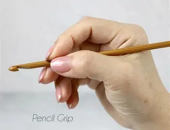
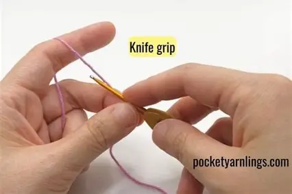
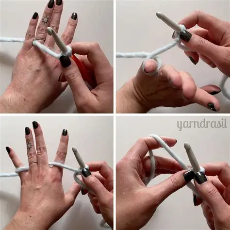

Why Holding Matters
The way you hold your hook and yarn affects your speed, tension, and comfort. There are two main holding styles used by crocheters around the world. Neither is “better” — choose the one that feels natural for you!
Technique 1: The Pencil Grip
This grip looks like the way you hold a writing pencil. It gives excellent control and is loved by beginners for its stability.

- Hold the hook as if you're holding a pencil.
- Your thumb and index finger grip the flat part of the hook (the “thumb rest”).
- Your other fingers remain relaxed beneath the hook.
Great for: people who prefer precise, delicate movements.
Technique 2: The Knife Grip
This grip looks like the way you hold a dinner knife. Most crocheters eventually prefer this grip because it offers power and speed.

- Place your hand over the hook like you're holding a knife.
- Your thumb rests on the thumb grip, and your fingers wrap around the hook.
- Allows smoother wrist rotation for faster stitching.
Great for: people who like a firm grip and quicker movements.
How to Hold Your Yarn
Yarn tension is key. You control the yarn with your non-dominant hand.

- Wrap yarn under your pinky finger.
- Bring it over your ring finger.
- Lay it across your middle and index fingers.
- Use your index finger to raise or lower the yarn for tension.
Remember: Yarn should glide, not stretch. Comfortable tension = smoother stitches.